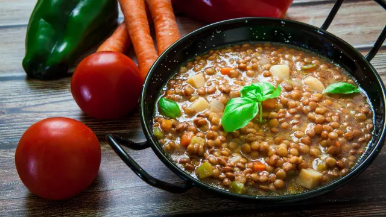

LENTEJAS CLASICAS

La vida es una lenteja o la tomas o la dejas
INGREDIENTES:
- Lentejas -> 250g
- Pimiento verde -> 100g
- Cebolla -> 80g
- Puerro -> 70g
- Zanahoria -> 100g
- Patata -> 250 g
- Salsa de tomate -> 50 g
- Diente de ajo -> 1
- Pimentón dulce -> 1 cucharadita
- Sal
PREPARACIÓN:
- Picamos en trozos menudos el ajo, la cebolla, la zanahoria, el pimiento verde y el puerro. Calentamos un poco de aceite de oliva en una cacerola, añadimos las verduras y sofreímos a fuego bajo durante cinco minutos. Sazonamos ligeramente, agregamos la salsa de tomate y cocer tres minutos más.
- Añadimos las lentejas, la hoja de laurel y las patatas, chascándolas con el cuchillo, y cocemos un par de minutos. Cubrimos con abundante agua fría y cocemos (mejor tapadas) durante 40-50 minutos o hasta que estén tiernas. Si se vieran muy secas, añadimos más agua durante el proceso.
- Calentamos un chorro de aceite en una sartén, añadimos el pimentón y retiramos inmediatamente del fuego para evitar que se queme. Incorporamos a la cacerola con las lentejas, removemos y cocemos cinco minutos más. Servimos bien calientes.
INFORMACIÓN NUTRICIONAL:
- Grasas
- 1,19 gr/kg
- Hidratos de carbono
- 60 gr/Kg
- Proteinas
- 24,44 gr/kg
- Valor energetico
- 334Kcal / 1.398Kj